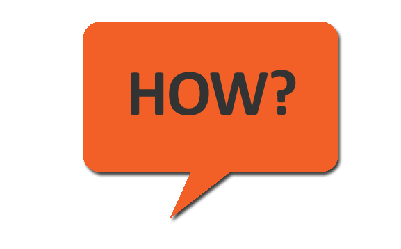

Who I am...
- 8 years as JavaScript Developer
- eWizard.js Team Lead at Viseven
- Frontend Tech Lead
- IT Academy Lead
- Vue, Vuex, Vue-rx, Rx.js...
Fb: anna.dederkal.1
Twitter: @AnnaShavurska

Anna Shavurska, Viseven
With ♥ by Anna Shavurska, Viseven
Fb: anna.dederkal.1
Twitter: @AnnaShavurska
let a = 1;
let b = 2;
let sum = a + b;
console.log(sum); // 3
a = 2;
console.log(sum); // ? 3
let a = 1;
let b = 2;
let sum = a + b;
console.log(sum); // 3
a = 2;
console.log(sum); // ? 4

Reactive programming is a declarative programming paradigm concerned with data streams and the propagation of change
button.addEventListener(event => {
console.log(event);
});

const hi = 'hi';
const iterator = hi[Symbol.iterator]();
iterator.next(); // 'h'
iterator.next(); // 'i'
iterator.next(); // undefined
import { from } from 'rxjs';
const observable = from('hi');
observable.subscribe((x) => {
console.log(x);
});
// 'h', 'i'
An API for asynchronous programming with observable streams

button.addEventListener(event => {
console.log(event);
});
fromEvent(button, 'click')
.subscribe(event => console.log(event));
const example = sourceOne.pipe(
concat(sourceTwo),
filter(num => num % 2 === 0)
);
example.subscribe(val => console.log(val));
It doesn’t do anything to help you manage async code.
We tend to think synchronously. We write code in blocks that are read top to bottom, left to right. If this, then this, else this…
What are we doing with code?
mouseDown$ = fromEvent(body, 'mousedown')
.pipe(map(getCoordsFromEvent));
mouseMove$ = fromEvent(body, 'mousemove')
.pipe(map(getCoordsFromEvent));
mouseUp$ = fromEvent(body, 'mouseup')
.pipe(map(getCoordsFromEvent));
const dragStart$ = mouseDown$
.pipe(flatMap(() => mouseMove$.pipe(takeUntil(mouseup$),take(1))));
const dragMove$ = mousedown$
.pipe(flatMap(() => mouseMove$.pipe(takeUntil(mouseup$))));
const dragEnd$ = dragStart$
.pipe(flatMap(() => mouseUp$.pipe(take(1))));
const dragElement$ = dragStart$
.pipe(
map(({ x, y }) => document.elementFromPoint(x, y)),
tap(dragEl => dragEl.classList.add('active')),
share(),
);
const previewElement$ = dragStart$
.pipe(
withLatestFrom(dragElement$),
map(([{ x, y }, dragEl]) => createPreviewElement(dragEl, x, y)),
tap(previewElement => body.appendChild(previewElement)),
share(),
);

const movePreviewElement$ = dragMove$
.pipe(
withLatestFrom(previewElement$),
tap(([{ x, y }, previewEl]) => {
movePreviewElement(previewEl, x, y))
}),
);
const moveDragElement$ = dragMove$
.pipe(
withLatestFrom(dragElement$),
tap(([{ x, y }, dragEl]) => moveDragElement(dragEl, x, y)),
);
const moveDragElement$ = dragMove$
.pipe(
withLatestFrom(dragElement$),
sampleTime(200),
tap(([{ x, y }, dragEl]) => moveDragElement(dragEl, x, y)),
);
const finishMovement$ = dragEnd$
.pipe(
withLatestFrom(previewElement$, dragElement$),
tap(([_, previewEl, dragEl]) => {
previewEl.remove();
dragEl.classList.remove('active');
}),
);
movePreviewElement$.subscribe(() => {});
moveDragElement$.subscribe(() => {});
finishMovement$.subscribe(() => {});
RxJS integration for Vue.js.
Handles subsribtion/unsubscription for you.
export default {
name: 'save-changes',
subscriptions: {
statusMessage: new Observable(...)
}
};
//bind to it normally in templates
<p>{{ msg }}</p>
<v-btn v-stream:click="save$">Save</v-btn>
export default {
domStreams: ['save$'],
subscriptions () {
return {
statusMessage: this.save$.pipe(map(() => 'Saving'))
}
}
};

const store = {
state: { status: Status.Initial }
mutations: {
setStatus(state, { status }) { state.status = status; }
},
actions: {
save({ commit }) {
commit('setStatus', { status: Status.Saving });
saver.save();
},
setStatus({ dispatch, commit }, data) {
commit('setStatus', data);
},
},
};
methods: {
...mapActions('saveModule', ['save'])
}
export default {
subscriptions () {
const status$ = this.$watchAsObservable('status',{immediate:true})
.pluck('newValue')
.share();
return {
statusMessage: status$.map(this.getStatusMessages),
}
},
computed: {
...mapState('saveModule', ['status']),
}
};

Stop worrying about the operators
Seriously!
promise.then(resolveFn);
observable.subscribe(nextFn);
Then try to use 'map' to chain observables.
Remain calm, it's ok
Use operators that you know
You can build your app as one big observable...
but please don't